Map first
Pins for people, vehicles and saved places on a full-screen map. Members who are far away wait at the edge as bubbles that point their way.
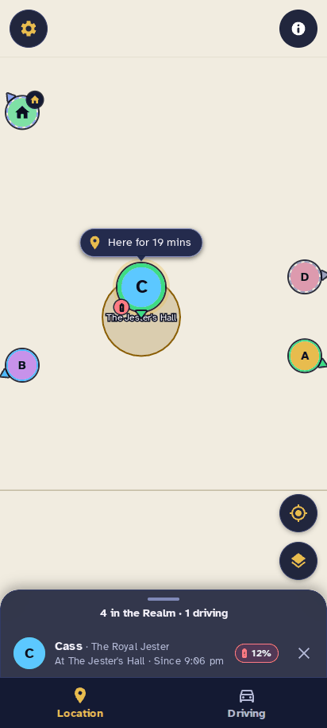
A map-first family locator. It reads Home Assistant's Life360 integration and companion app, draws the whole court on a full-screen map, and keeps weekly driving reports without any cloud.
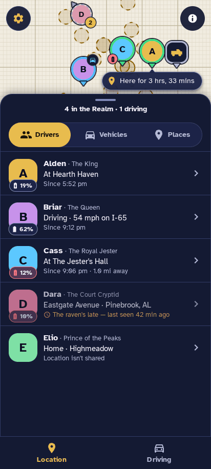
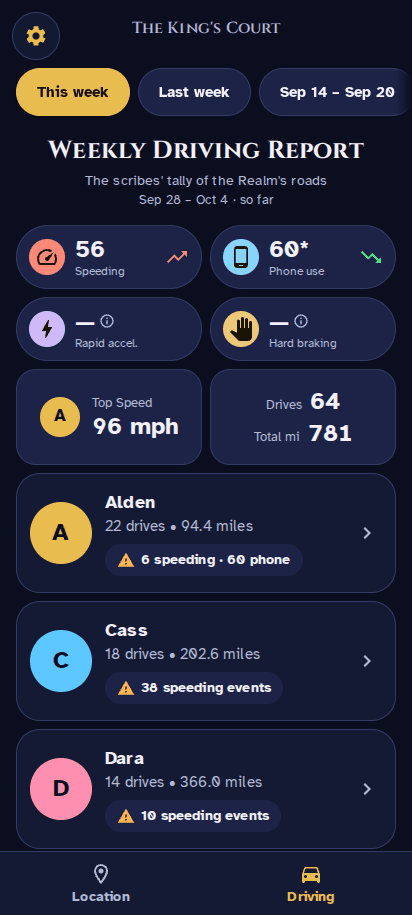
Open it from the Home Assistant sidebar and the map is the app. Everything else is a sheet away.
Pins for people, vehicles and saved places on a full-screen map. Members who are far away wait at the edge as bubbles that point their way.

The sheet rests low so the map stays yours, then opens to 80 percent for Drivers, Vehicles and Places. Wide screens get a side panel.
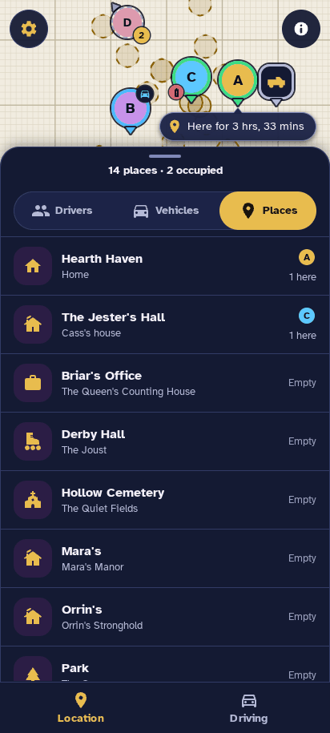
Speeding, phone use, rapid acceleration, hard braking, top speed, drives and miles, with a card for each driver and a picker for earlier weeks.
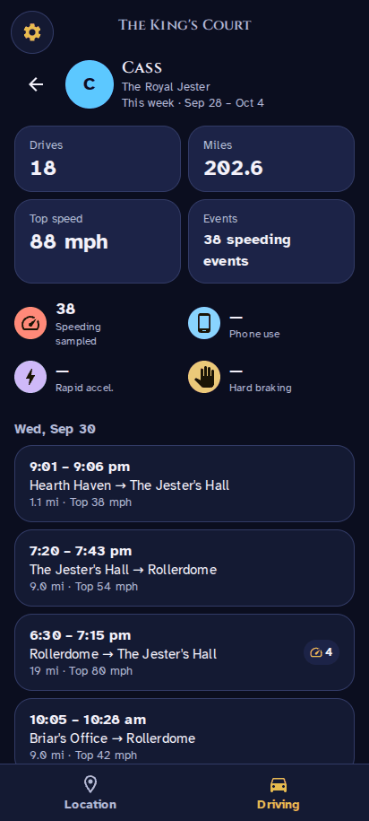
Tap any number to see where it comes from, with a bar per driver. Missing data shows a dash, never a guess.
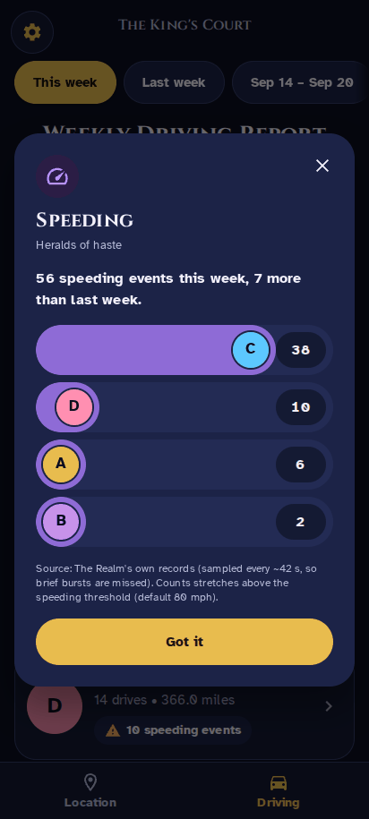
Night, Day, Streets or Satellite from the layers button, plus a toggle for place circles.
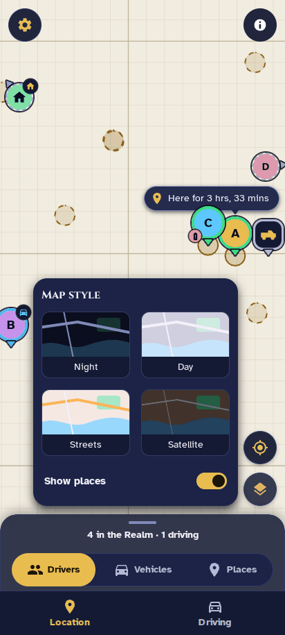
A fictional court on a frozen clock, so you can check the install before any real data is involved. Every screenshot here is Demo mode.
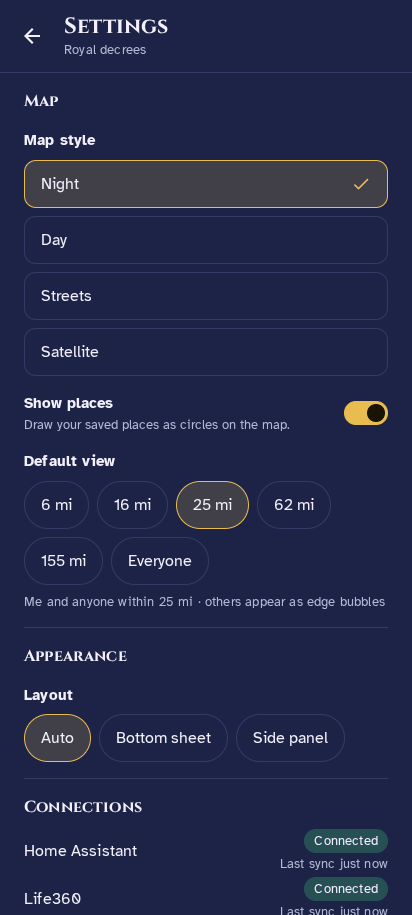
Real captures of the running app, in Demo mode.
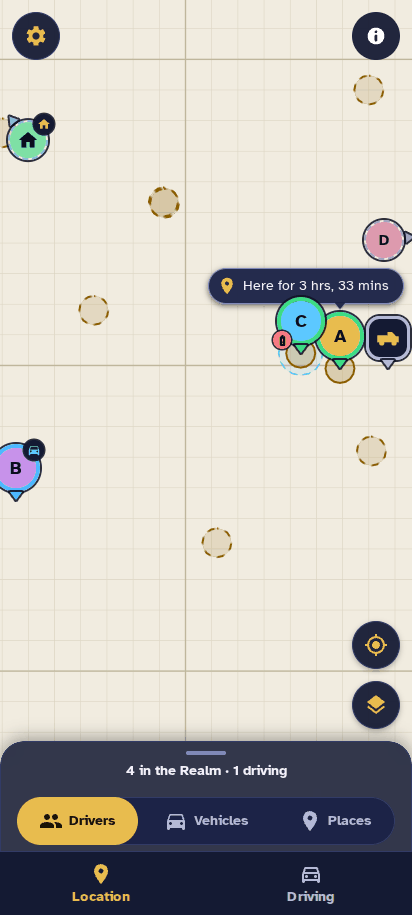
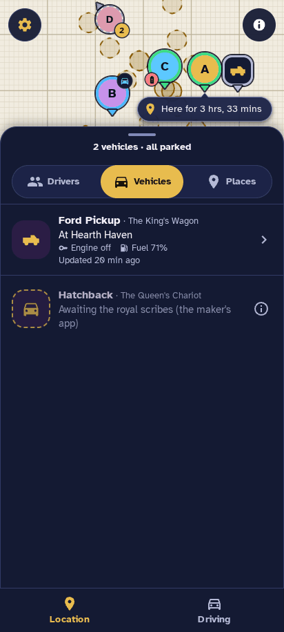
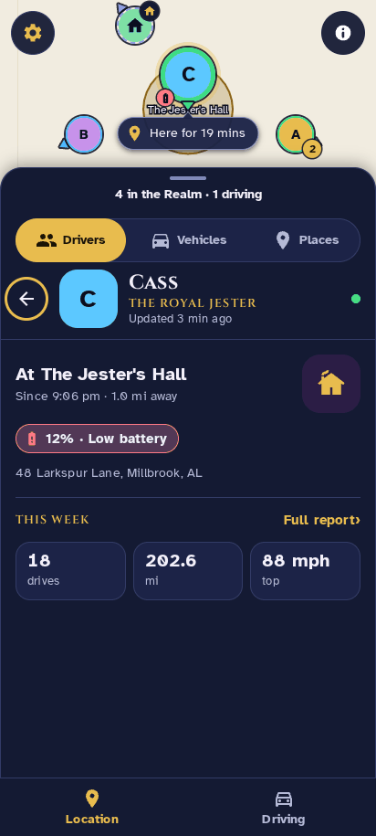
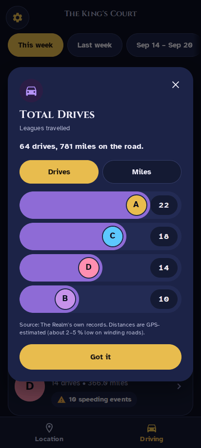
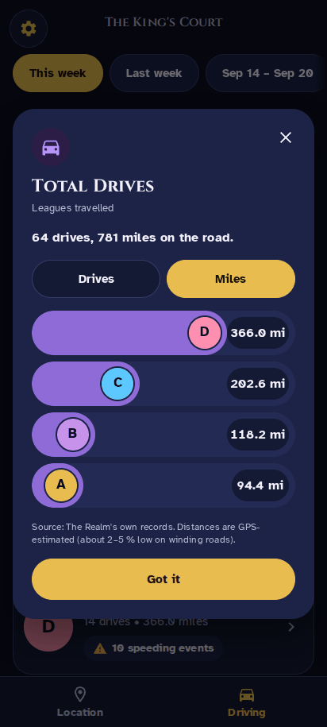
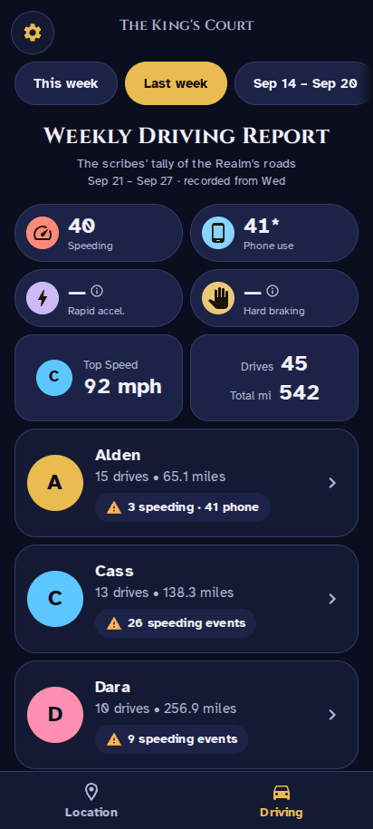
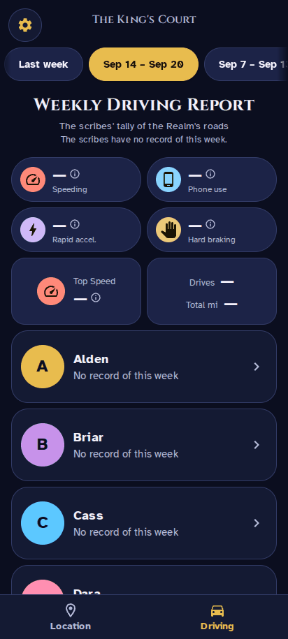
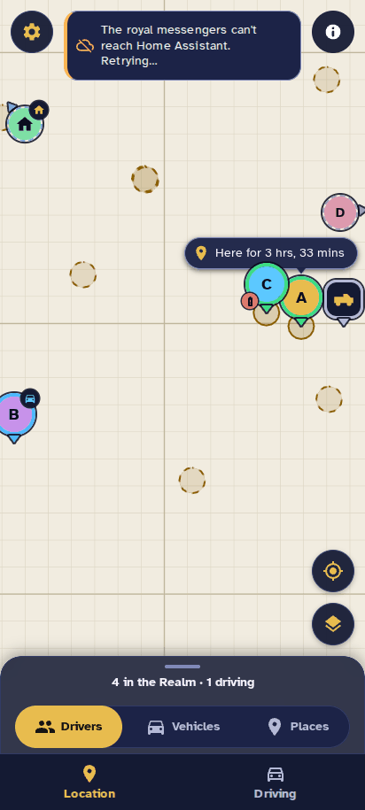
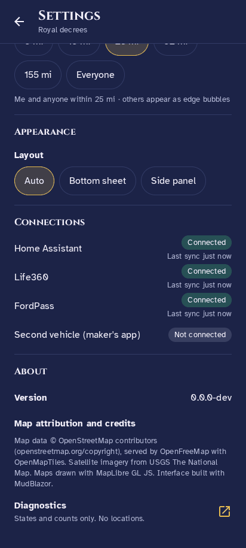
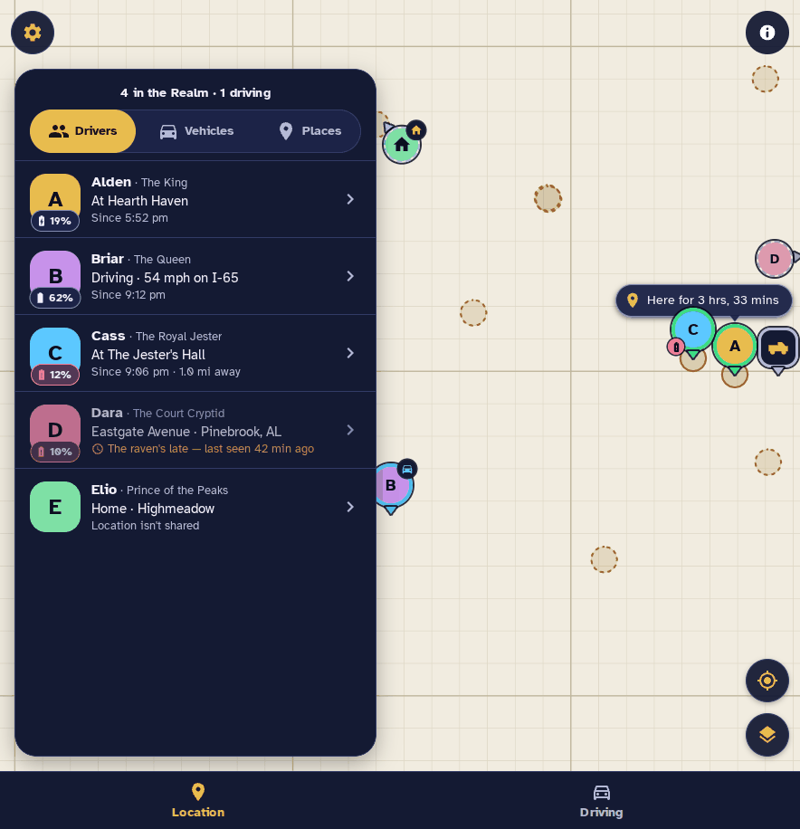
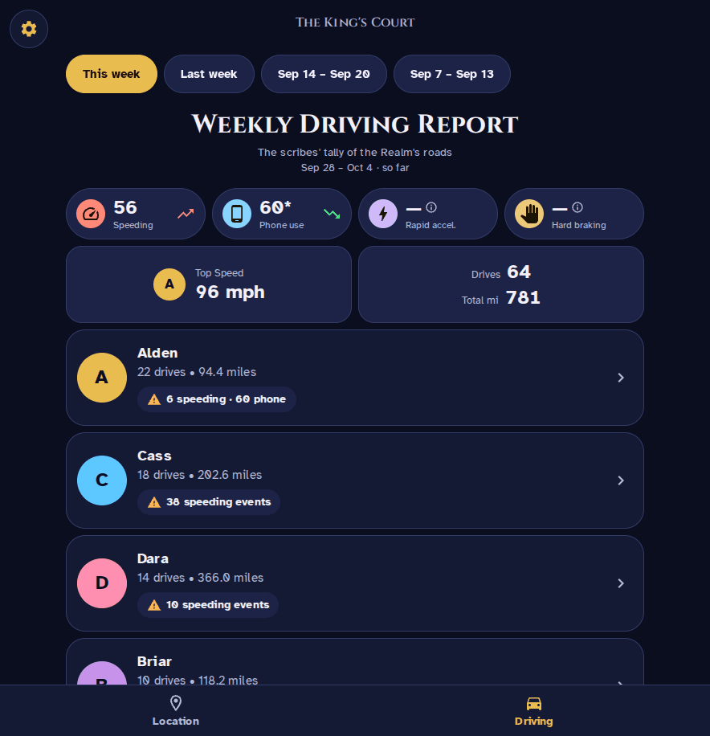
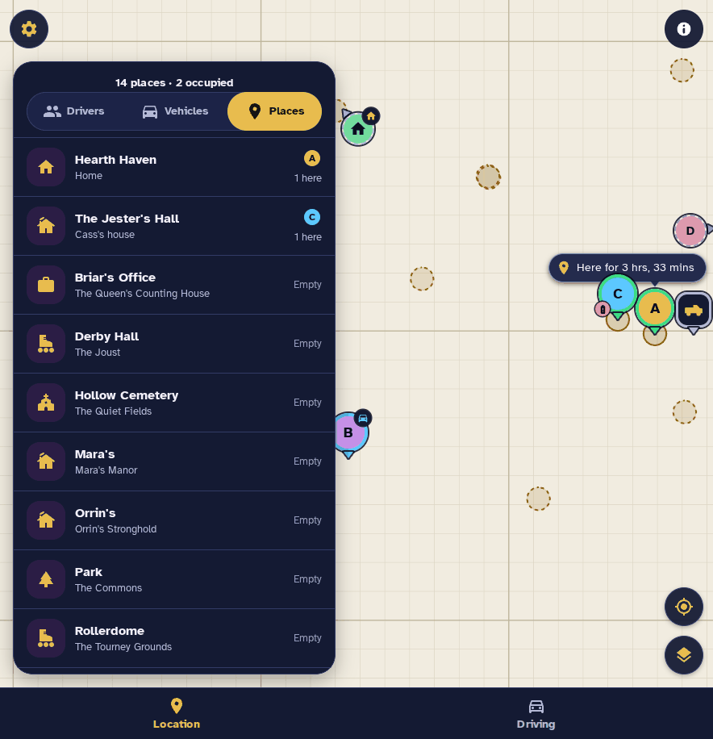
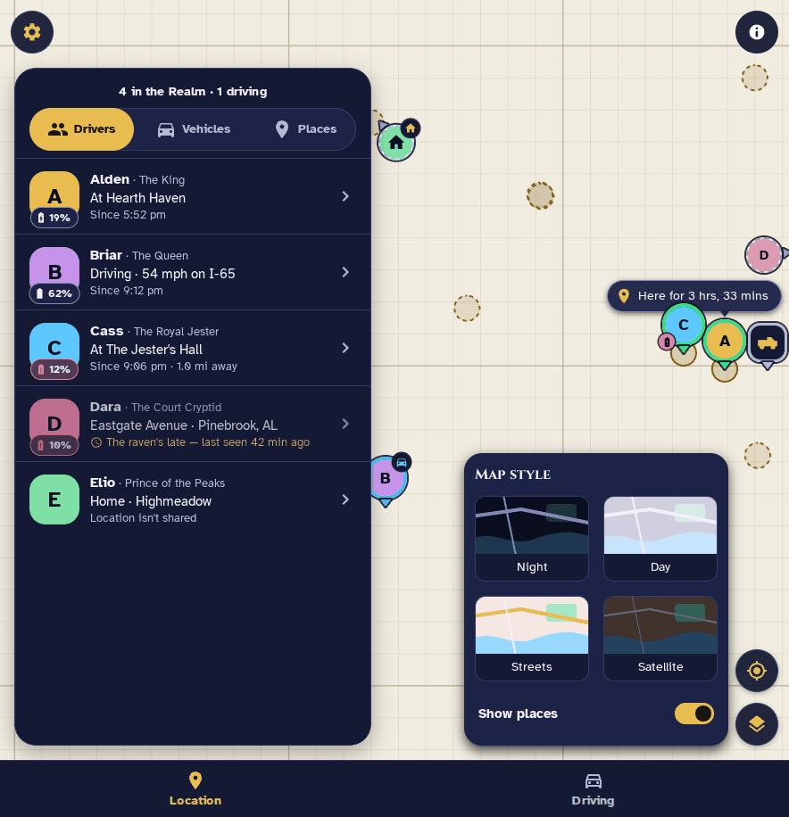
Needs Home Assistant OS or Supervised (it uses the Supervisor) on an amd64 machine.
https://github.com/Versile2/ha-cartographer and press Add.demo_mode: true) and save.Full details, the registry note and troubleshooting are in the README and DOCS.
Built for people who would rather not hand their family's whereabouts to a cloud.
Positions, trips and vehicle samples live in a local database inside the add-on and travel only in your own backups.
No analytics, telemetry, update checks or geocoding. Ingress is the only door in; no port is opened.
It reads Home Assistant's entities and never calls Life360's API. Member pictures are the one fetch, made without credentials.
Your browser fetches tiles from public servers, which see your IP and the area in view, not who is on the map. Demo mode fetches nothing.
On purpose: the store lists the project as HA Cartographer, and inside Home Assistant the sidebar entry, with the crown icon, is called The Realm.
Not for the app itself. It reads what Home Assistant's Life360 integration and the companion app already publish.
Not today. Add-ons need the Supervisor, and the image is built for amd64.
Enable the disabled binary_sensor.<device>_interactive entity of the companion app. The app never changes your Home Assistant configuration for you.
Switch on Show in sidebar on the app's page; Home Assistant keeps that as a per-install setting.